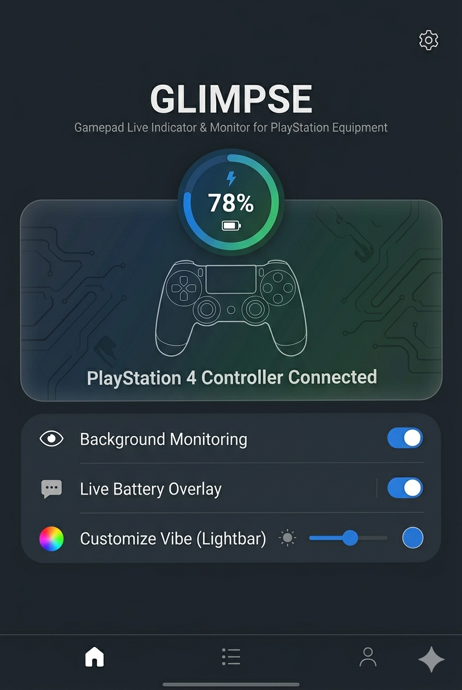

Controller detection
Uses Android Bluetooth and input device APIs to identify connected game controllers and read available battery information.
Android utility app
A lightweight Android app for monitoring connected Bluetooth game controllers and showing controller battery or status information in a small overlay.

Batmon / Glimpse focuses on controller status visibility while keeping the app simple and local to the device.
Uses Android Bluetooth and input device APIs to identify connected game controllers and read available battery information.
Shows a compact floating overlay with battery or status information when the user enables the overlay feature.
Uses a foreground service notification so controller monitoring and overlay updates can remain stable while enabled.
The app requests permissions only for the features it provides. Permission availability and behavior can vary by Android version and device.
Used to detect connected controllers and access controller status such as battery level when Android exposes it.
Used to display the optional floating controller status overlay. The app does not use the overlay to control other apps.
Used for the foreground service notification that keeps monitoring visible to the user while it is active.
Batmon / Glimpse does not use Accessibility Service, does not record the screen, and does not control other apps. The Report Problem feature opens the user's email app so the user can review and send a report manually.